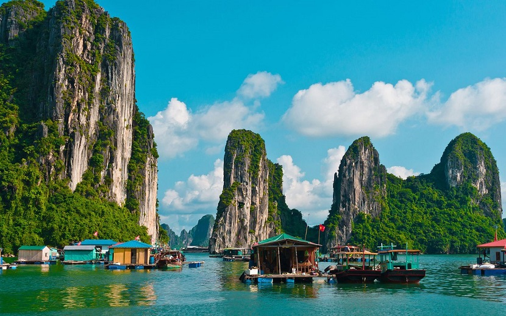

GIỚI THIỆU DU LỊCH HẠ LONG
Hạ Long là điểm du lịch biển hấp dẫn hàng đầu ở khu vực miền bắc, đi du lịch Hạ Long bạn được thỏa thức bơi lội ở những bãi biển đẹp và ngồi thuyền khám phá Vịnh Hạ Long một di sản thiên nhiên của thế giới và là một trong bảy kỳ quan thiên nhiên mới của nhân loại.
THỜI ĐIỂM DU LỊCH HẠ LONG
Du lịch Hạ Long chia làm 2 mùa rõ rệt, mùa hè từ tháng 4 đến tháng 10 hàng năm là thời điểm thu hút du khách trong nước, mùa đông từ tháng 11 đến tháng 3 là thời điểm thu hút du khách quốc tế. Tháng 4 đến tháng 10: Mùa hè là mùa cực kì oi bức và khó chịu do ảnh hưởng của khí hậu nhiệt đới, chính vì thế từ tháng 4 - tháng 10 khách du lịch nội địa đổ về Hạ Long tắm biển và nghỉ dưỡng rất đông. Tháng 11 đến tháng 3 năm sau: thường là thời điểm hút khách du lịch quốc tế hơn, bởi thời tiết mát mẻ và đỡ đông khách nội địa. Vì thế khách quốc tế thường thăm vịnh Hạ Long vào mùa này hàng năm.

DI CHUYỂN, ĐI LẠI
ĐI ĐẾN HẠ LONG
Hạ Long cách Hà Nội 170km, nên rất thuận tiện để đi đến Hạ Long, bạn có thể đi đến Hạ Long bằng xe khách, tàu hỏa hoặc ô tô riêng.
ĐI LẠI Ở HẠ LONG
Đến Hạ Long, bạn có thể đi tham quan thành phố và đi đến các điểm du lịch bằng Taxi, hoặc thuê xe máy riêng.
ĐIỂM DU LỊCH NỔI TIẾNG Ở HẠ LONG
Điểm du lịch nổi tiếng nhất và đẹp nhất ở Hạ Long là Vịnh Hạ Long, ngoài còn có nhiều điểm du lịch đẹp khác như Bãi Biển Bãi Cháy, Đảo Tuần Châu, Sun World Hạ Long, Núi Bài Thơ ...
VỊNH HẠ LONG - ĐIỂM DU LỊCH HẤP DẪN NHẤT HẠ LONG
Vịnh Hạ Long được UNESCO công nhận là di sản thiên nhiên thế giới, vùng di sản thiên nhiên được thế giới công nhận có diện tích 434 km2 bao gồm 775 đảo, như một hình tam giác với 3 đỉnh là đảo Ðầu Gỗ (phía tây), hồ Ba Hầm (phía nam), đảo Cống Tây (phía đông) vùng kế bên là khu vực đệm và di tích danh thắng quốc gia.

Để tham quan Vịnh bạn cần mua vé tàu để tham quan, bạn có thể vé riêng lẻ từng người để đi ghép chung trên 1 chuyến tàu hoặc bạn có thể thuê cả 1 tàu để đi tham quan. Vé được bán theo từng tuyến riêng lẻ, có 3 tuyến chính để tham quan Vịnh. - Tuyến 1 (thời gian tham quan 4 tiếng): Hòn Chó Đá, Hòn Đỉnh Hương, Làng Chài Ba Hang, Hòn Trống Mái, Động Thiên Cung, Hang Đầu Gỗ. - Tuyến 2 (thời gian tham quan 6 tiếng): Hòn Chó Đá, Hòn Đỉnh Hương, Làng Chài Ba Hang, Hòn Trống Mái, Hang Sửng Sốt, Đảo Ti Tốp, Động Mê Cung, Hang Luồn. - Tuyến 3 (thời gian tham quan 8 tiếng): Du khách sẽ đi tham quan toàn bộ các điểm du lịch của tuyến 1 và tuyến 2, giá vé thăm quan tuyến 3 là 540.000 vnd cho 1 khách.

Những điểm du lịch bạn sẽ tham quan trên Vịnh Hạ Long
Hang Sửng Sốt: Đây là một hang động rộng và đẹp vào bậc nhất của vịnh Hạ Long. Đường lên hang Sửng Sốt luồn dưới những tán lá rừng, những bậc đá ghép cheo leo. Đi vào trong, cảnh trí còn nhiều điều gây “sửng sốt” như nhũ đá, cây đa cổ thụ tán lá xum xuê, vách tường và con đường như được đẽo khảm qua dòng chảy thời gian….

Đảo Ti Tốp: Ở đảo Titov, du khách vừa có thể trải nghiệm khoảng thời gian thư giãn nơi bờ bãi lặng sóng, vừa có thể khám phá con đường leo lên tới đỉnh núi để ngắm trọn cảnh Vịnh với cát trắng, biển xanh, tàu thuyền 4 mùa len lỏi giữa những rặng núi đá chông chênh mà hoang sơ hùng vĩ.

Hòn Trống Mái: Với hình ảnh như một đôi gà đang âu yếm nhau, Hòn Trống Mái trở thành điểm đến không thế thiếu khi đến với Vịnh Hạ Long. Đã đứng hiên ngang nơi sóng nước mênh mông của vùng vịnh hàng triệu năm, 2 khối đá cao hơn chục mét là nguồn cảm hứng thi ca cho bao đời nghệ sĩ.

Hang Đầu Gỗ: rộng khoảng 5.000 m2, nằm trên độ cao 27m so với mực nước biển cùng độ tuổi tạo thành Động Thiên Cung Hang Đầu Gỗ. Hang động nằm trên đảo Đầu Gỗ. Từ phía xa nhìn lại, cửa hang có màu xanh lam hình một con sứa biển, qua 90 bậc đá xây ta tới cửa hang. Vòm hang cao khoảng 25m, từ trên cao ấy hàng trăm nhũ đá khổng lồ rủ xuống như một dòng thác kỳ lạ.

Động Mê Cung: nằm trên đảo Lờm Bò, ở độ cao 25m so với mực nước biển, cách đảo Titop khoảng 2km về phía Tây Nam. Động Mê Cung còn được các nhà khảo cổ học xác định là một trong những di chỉ thuộc nền văn hóa Hạ Long sớm, cách ngày nay từ 7.000 đến 10.000 năm.

Hang Luồn: Qua Hang Luồn, một vùng nước trong xanh phẳng lặng, êm đềm sẽ mở ra với bốn bề vách đá dựng đứng. Từ chiếc cổng hình cánh cung tuyệt đẹp, nhũ đá rủ xuyên qua dãy núi, bốn bề cây cối lại um tùm, chính nơi đây bạn sẽ cảm nhận được một thảm thực vật phong phú được bảo tồn nguyên vẹn như thế nào suốt bao năm.

NHỮNG ĐIỂM DU LỊCH Ở XA HẠ LONG
Đảo Cô Tô: đảo nằm cách bến cảng Cái Rồng khoảng 3 tiếng đi tàu thường, đây là điểm đến được nhiều bạn trẻ yêu thích trong các dịp hè với các hoạt động trên biển, những buổi cắm trại đêm. Đảo Cô Tô vẫn còn nhiều nét hoang sơ, các bãi biển nước trong, cát mịn, dịch vụ chưa phát triển.
Cát Bà: Quần đảo Cát Bà là quần thể gồm 367 đảo trong đó có đảo Cát Bà ở phía nam vịnh Hạ Long, ngoài khơi thành phố Hải Phòng và tỉnh Quảng Ninh, cách trung tâm thành phố Hải Phòng khoảng 30 km, cách thành phố Hạ Long khoảng 25 km. Về mặt hành chính, quần đảo thuộc huyện đảo Cát Hải, thành phố Hải Phòng. Nơi đây đã được UNESCO công nhận là khu dự trữ sinh quyển thế giới.

Yên Tử: là một di tích và danh lam thắng cảnh nổi tiếng ở Quảng Ninh. Nơi đây còn lưu giữ nhiều di tích lịch sử với mệnh danh là đất tổ Phật giáo Việt Nam. Vốn là một thắng cảnh thiên nhiên, ngọn Yên Tử thường có mây bao phủ nên trước đây có tên gọi là Bạch Vân sơn. Vì vậy mà thu hút hàng triệu lượt khách tham quan mỗi năm. Yên Tử cách Hạ Long 40km.